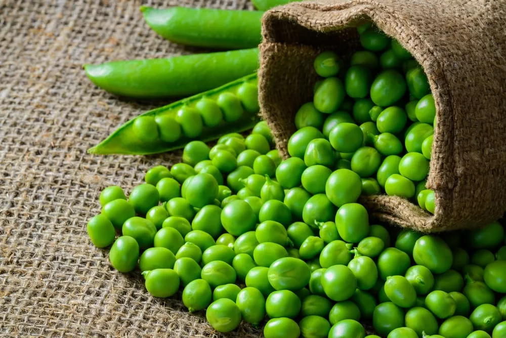

Produzione 2019
Zucchine

Coltivare in terreno molto ricco di materia organica e non coltivare dopo Solanace o piante della stessa famiglia delle cucurbitace.
- Varietà: Zucchina chiara di Faenza
- Periodo di Semina: Marzo/Aprile
- Primo raccolto Fine Aprile
- Ultimo raccolto Fine Luglio
- Raccolto
| Dimensioni |
Quantità |
| Piccole |
16 |
| Medie |
26 |
| Grandi |
9 |
|
51 |
Acquista Semi
Piselli

American Word: Varietà media precoce come ciclo culturale.
Consigli
- Piantare in semenzaio
E' importante
- Acqustare vasetti biodegradabili(di cocco o cartone)
- Mantenere arcato il semenzaio per evitare muffe
- Non usare il coperchio del semenzaio
- Non usare mettere il semenzaio vicino al termosifone
- Fissare i sostegni nel terreno non appena le piantine raggiungono i 10cm
- Acquistare una rete con spazi di non più di 10cm per garantire sostegni adeguati
Acquista Semi